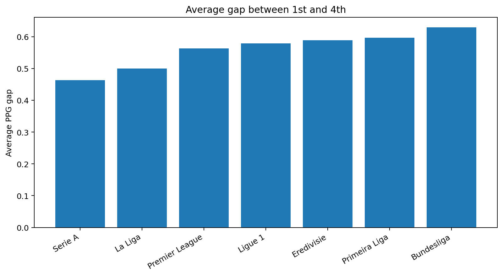
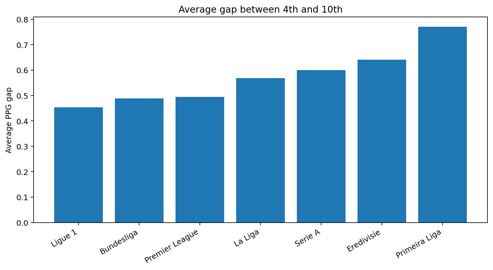
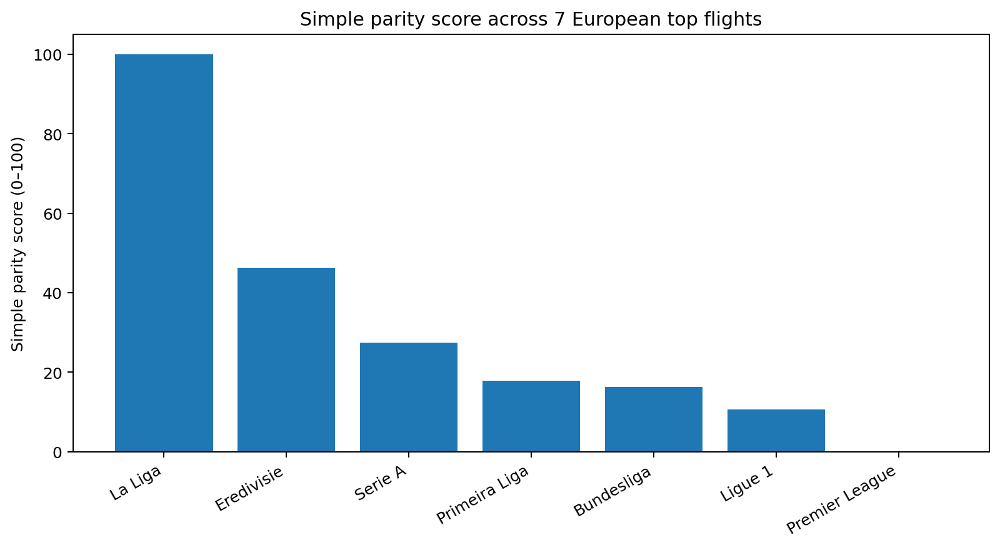

Top-end separation
The gap from first to fourth place shows how quickly a league stretches near the top. In this bundle, Bundesliga and Primeira Liga stand out as the loosest title-to-Champions-League race groupings.
European League Parity
Across seven major European top flights and ten seasons, points-per-game patterns suggest clear differences in how steep, compressed, or stratified league tables tend to be.
This site keeps the scope narrow: top-flight leagues only, one comparable metric, and a small set of views built from the existing analysis bundle. The goal is not to over-model competition. It is to show, clearly, how league table shapes differ.
Scope
Each row comes from the highest domestic league, not lower divisions or cup play.
Premier League, La Liga, Serie A, Bundesliga, Ligue 1, Eredivisie, and Primeira Liga.
The window runs from 2015/16 through 2024/25 to keep the comparison recent but stable.
Points per game makes leagues with different match counts easier to compare on the same scale.
Main View
Start with the full table curve, then switch to where separation opens up. Flatter curves and smaller gaps point to more parity; steeper drops and wider gaps point to less.
Average PPG by rank across the full table.
A flatter line means teams remain closer together from top to bottom. A steeper line suggests the table separates more sharply.
Supporting Views

The gap from first to fourth place shows how quickly a league stretches near the top. In this bundle, Bundesliga and Primeira Liga stand out as the loosest title-to-Champions-League race groupings.

This is where league texture becomes clearer. Ligue 1 stays relatively compressed beyond the European places, while Primeira Liga opens up more sharply in the middle band.

The simple parity score is useful as a compact ranking, but it is not the whole argument. The table curves and gap views matter more than any single composite number.
League Headlines
Method
The analysis uses existing processed league-table outputs from the repo bundle. It compares seven top-flight leagues over ten seasons and standardizes results with points per game.
Parity here does not mean the same thing for every fan or analyst. A league can look tight at the top, loose in mid-table, or compressed at the bottom. The site keeps that distinction visible instead of forcing everything into one number.
The score summary is a simplification, and rare tie-break edge cases may differ slightly from official table ordering. That does not change the broader shapes shown here.